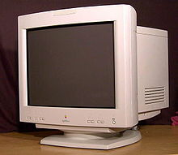

1.7.2. Электронно-лучевые трубки

Электронно-лучевой трубкой (ЭЛТ или CRT, Cathode Ray Tube) называют вакуумную электронную лампу, в которой поток электронов концентрируют в луч, направленный в сторону экрана. Обычно концентрацию (фокусировку) электронов в луч осуществляют либо воздействием электрического поля, либо магнитного поля.
К разновидностям ЭЛТ (CRT) относят: электромагнитные, электростатические, запоминающие, индикаторные трубки, кинескопы и прочие. ЭЛТ с электростатической фокусировкой используют в осциллографах в качестве устройства отображения осциллограмм.
Рассмотрим принцип действия электростатической электроннолучевой трубки. Упрощённое устройство и подключение электроннолучевой трубки с электростатическим управлением дано на рис. 7.2.
Рис. 7.2. Электронно-лучевая трубка
На рисунке цифрами отмечено: 1 - нить накала; 2 - катод; 3 - модулятор; 4 и 5 - первый и второй аноды; 6 и 7 - пластины отклонения луча вдоль осей Y и X; 8 - аквадаг; 9 - экран трубки.
Резистор R1 служит для коррекции яркости изображения, а резистор R3 - для регулировки его фокуса.
Электронно-лучевая трубка состоит из трёх важнейших частей – электронной пушки, системы отклонения луча и экрана.
Электронная пушка включает нить накала, разогревающую никелевый катод, испускающий в результате эмиссии электроны, которые собирает в луч модулятор, состоящий из металлического цилиндра с маленьким отверстием в центре одного из торцов.
Чтобы разогнать электроны до необходимой скорости, используют систему из двух анодов. На второй анод подают много большее напряжение (от единиц до десятков киловольт), чем на первый анод (сотни вольт). Кроме увеличения скорости потока электронов, аноды осуществляют некоторую его фокусировку, действуя как электростатическая линза. Затем электронный луч проходит между пластинами вертикального и горизонтального отклонения луча. Если приложить постоянное напряжение к одной из систем платин, то поток электронов будет смещён в сторону той пластины, к которой был подсоединён положительный полюс питания.
Внутреннюю поверхность экрана, выполненного из стекла, покрывают люминофором, т.е. веществом, попадая в которое электроны выбивают кванты света. Аквадагом именуют электропроводящее графитное покрытие поверхности колбы ЭЛТ, которое электрически подсоединяют ко второму аноду с целью поглощения вторичных электронов, которые возникают при достижении электронным лучом люминофора.
В ЭЛТ с электромагнитным управлением электронный поток фокусируют не пластины горизонтального и вертикального отклонения луча, а фокусирующая и отклоняющая катушки, которые надевают на колбу трубки, порождающие взаимно перпендикулярные магнитные потоки. Аноды при электромагнитном управлении лучом служат исключительно для его ускорения.
В настоящее время электронно-лучевые трубки практически полностью вытеснены из бытовой и компьютерной аппаратуры. Однако их продолжают использовать в специальной аппаратуре, например, которая должна работать в условиях радиации, а также это могут оыть радиолокаторы, системы наблюдения за промышленными роботами и др.